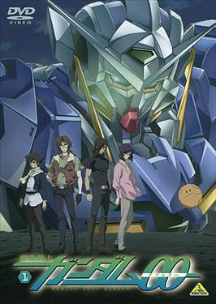
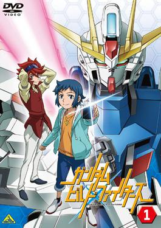
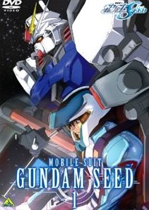

Gundam Series
Mobile Suit Gundam 00
Mobile Suit Gundam 00 (機動戦士ガンダム00（ダブルオー）, Kidō Senshi Gandamu Daburu Ō, Mobile Suit Gundam Double-O) is a Japanese anime television series, the eleventh installment in Sunrise studio's long-running Gundam franchise[1] comprising two seasons. The series is set on a futuristic Earth and is centered on the exploits of the fictional paramilitary organization Celestial Being and its efforts to rid the world of war and conflict with a series of unique and extremely advanced mecha mobile suits known as "Gundams".
Mobile Suit Gundam: The Witch from Mercury
Mobile Suit Gundam: The Witch from Mercury (Japanese: 機動戦士ガンダム 水星の魔女, Hepburn: Kidō Senshi Gandamu: Suisei no Majo) is a Japanese mecha anime series and the fifteenth mainline entry in Sunrise's long-running Gundam franchise. The series is directed by both Hiroshi Kobayashi and Ryō Andō and written by Ichirō Ōkouchi. It premiered in October 2022 on the JNN stations TBS and MBS.
Mobile Suit Gundam: Iron-Blooded Orphans
Mobile Suit Gundam: Iron-Blooded Orphans (Japanese: 機動戦士ガンダム 鉄血のオルフェンズ, Hepburn: Kidō Senshi Gandamu Tekketsu no Orufenzu), also known as Gundam IBO and G-Tekketsu (Gの鉄血), is a 2015 Japanese mecha anime series and the fourteenth mainline entry in Sunrise's long-running Gundam franchise, succeeding Gundam Reconguista in G. The series is directed by Tatsuyuki Nagai and written by Mari Okada, It aired in Japan on MBS and other JNN stations from October 4, 2015 to March 27, 2016,[1] making this the first Gundam series to return to a Sunday late afternoon time slot since Mobile Suit Gundam Seed. A second season would premiere the following year on October 2, 2016.
Gundam Build Fighters Try

Gundam Build Fighters Try (ガンダムビルドファイターズトライ, Gandamu Birudo Faitāzu Torai) is a 2014 Japanese science fiction anime television series based on Sunrise's long-running Gundam franchise, and a sequel to the 2013 series Gundam Build Fighters. Like its predecessor, and in contrast to other Gundam series, Gundam Build Fighters Try features a tournament-based storyline where Gunpla models are built, customized, and battled
Gundam Build Fighters
Gundam Build Fighters (ガンダムビルドファイターズ, Gandamu Birudo Faitāzu) is a 2013 Japanese science fiction anime television series based on Sunrise's long-running Gundam franchise. The series is directed by Kenji Nagasaki of No. 6 and written by Yōsuke Kuroda of Mobile Suit Gundam 00. Character designs were done by both Kenichi Ohnuki and Suzuhito Yasuda. The series was first unveiled under the name "1/144 Gundam Mobile" project by Sunrise
Mobile Suit Gundam SEED
Mobile Suit Gundam SEED (Japanese: 機動戦士ガンダムSEED, Hepburn: Kidō Senshi Gandamu Shīdo) is an anime series developed by Sunrise and directed by Mitsuo Fukuda. The ninth installment in the Gundam franchise, Gundam SEED takes place in a future calendar era, in this case the Cosmic Era. In this era, mankind has developed into two subspecies: Naturals, who reside on Earth, and Coordinators, genetically enhanced humans capable of amazing feats of intellect who emigrate to man-made orbital colonies to escape persecution by natural humans. The story revolves around a young Coordinator Kira Yamato who becomes involved in the war between the two races after a third, neutral faction's space colony is invaded by the Coordinators.